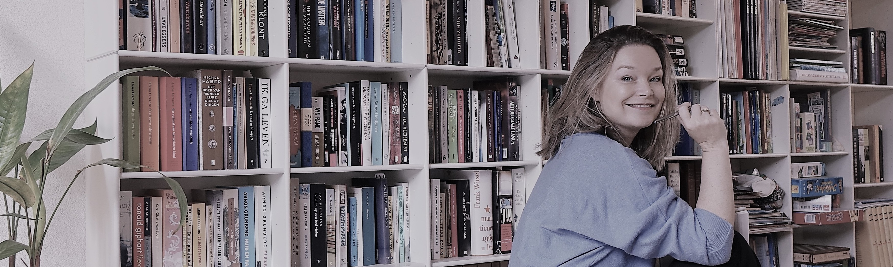

|

Jorien Wallast
Tekstschrijver
|
|||
|
Ik begon mijn carrière als journalist bij de Volkskrant. Het terugbrengen van complexe onderwerpen tot begrijpelijke, lezenswaardige teksten heb ik daar aardig in de vingers gekregen. Daarna werkte ik meer dan tien jaar bij verschillende goede doelen als communicatiestrateeg en ook die ervaring komt goed van pas. Als tekstschrijver kan ik op korte termijn redactionele, wervende of opiniërende teksten aanleveren, voor web, print of email. Heb je meer behoefte aan een eindredacteur? Dat kan natuurlijk ook.
Een van mijn sterke kanten is de snelheid waarmee ik werk. Heb je de juiste informatie paraat, maar moeite deze in een goede tekst te vatten? In een dag krijg je een eerste opzet retour. |
|||
| onderaan de pagina : contact, kvk, meer knoppen | |||